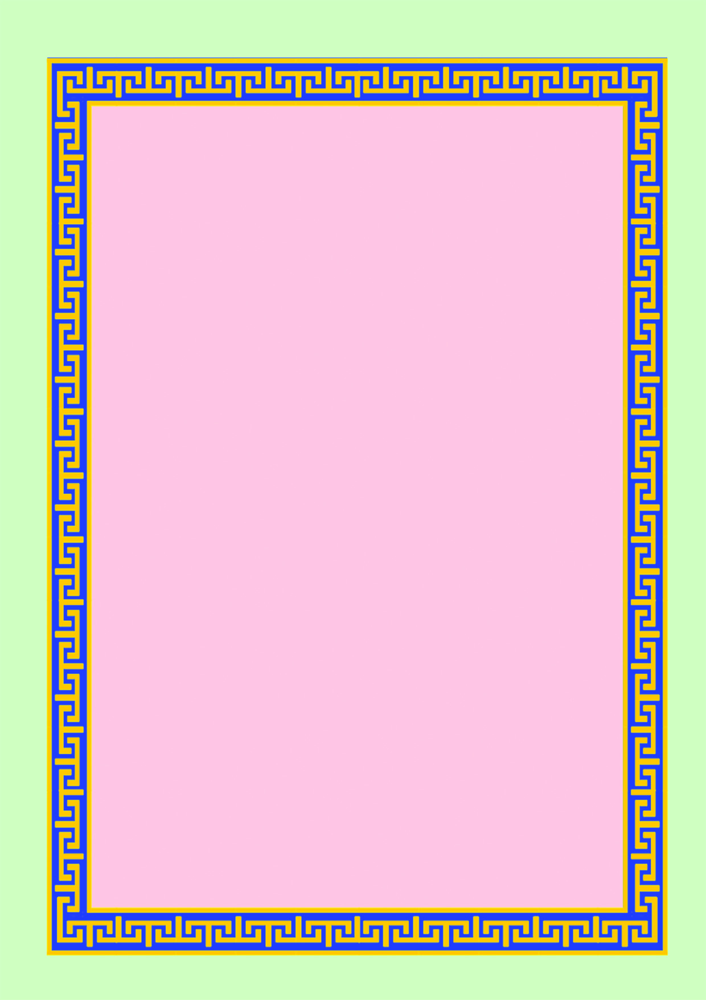
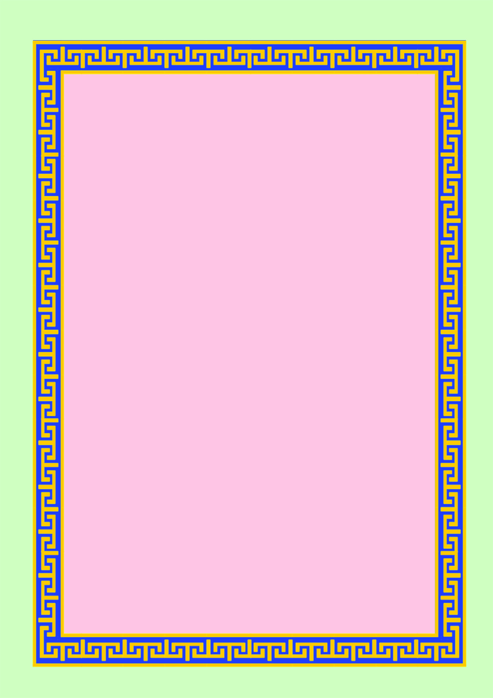

GOVERNMENT OF KERALA
DEPARTMENT OF EDUCATION
Part II
State Council of Educational Research and Training (SCERT, Kerala)
2016
Standard VI
Social Science
KT 631-1/Soc. Science 6 (E) Vol-2
Page 1
Page 2

State Council of Educational Research and Training (SCERT)
Poojappura, Thiruvananthapuram 695012, Kerala
Website : www.scertkerala.gov.in, e-mail : scertkerala@gmail.com
Phone : 0471 - 2341883, Fax : 0471 - 2341869
Typesetting and Layout : SCERT, Printed at : KBPS, Kakkanad, Kochi-30
© Department of Education, Government of Kerala
THE NATIONAL ANTHEM
Jana-gana-mana-adhinayaka, jaya he
Bharata-bhagya-vidhata.
Punjab-Sindh-Gujarat-Maratha
Dravida-Utkala-Banga
Vindhya-Himachala-Yamuna-Ganga
Uchchala-Jaladhi-taranga.
Tava shubha name jage,
Tava shubha asisa mage,
Gahe tava jaya gatha,
Jana-gana-mangala-dayaka jaya he
Bharata-bhagya-vidhata.
Jaya he, jaya he, jaya he,
Jaya jaya jaya, jaya he!
PLEDGE
India is my country. All Indians are my brothers and sisters. I
love my country, and I am proud of its rich and varied heritage.
I shall always strive to be worthy of it.
I shall give my parents, teachers and all elders respect, and treat
everyone with courtesy.
To my country and my people, I pledge my devotion. In their
well-being and prosperity alone lies my happiness.
Page 3

Dear Students,
Social Science is a window to the world. It leads you towards
immense possibilities in knowledge that inform and
fascinate. Golden moments in history are preserved here
as travelogues, tokens of the past, eternal symbols of our
nation's culture, stories narrated by the land, soil, rain
and man, economic activities and constitutional rights.
Social Science presents such a world of diverse hues. It
will guide you to imbibe history, love nature, understand
diversities, and to become responsible citizens. May the
discussions, debates, enquiries, and analyses make your
classrooms lively.
With warm regards,
Dr. J.PRASAD
Director
SCERT
Page 4

Experts
Dr. Abdul Razak P P
Associate Professor, Department of
History, PSMO College,
Thirurangadi
Dr. N. P. Hafiz Muhammed
Coordinator, Department of Sociology,
Calicut University.
I P Joseph
Assistant Professor (Rtd.), SCERT
P S Manoj Kumar
Assistant Professor, Department of History,
KKTM College, Kodungalloor,
Thrissur
Manoj K V
Research Officer, SCERT
Sudeesh Kumar J
Department of Politcal Science, VTM NSS
College, Dhanuvachapuram
Abdul Azees V P
HSST, VPKMM HSS, Puthoorpallikkal
Abdul Samad K C
HSST, Govt. HSS, Vadakara, Puthooru
Faisal V
HSST, GGHSS, Parayancheri, Kozhikkode
Jayakrishnan O K
HSA, KPCHSS, Pattannoor, Kannur
Muraleedharan Nair P N
HSST, NSSHSS, Anickadu, Kottayam
Nisha M S
UPSA, PHSS, Mezhuveli, Pathanamthitta
Nisanth Mohan M
HSST, Govt. Tamil HSS Chalai,
Thiruvananthapuram
Textbook Development Team
Participants
Academic Co-ordinator
Chithra Madhavan, Research Officer, SCERT
English Version
I P Joseph
Assistant Professor (Rtd.), SCERT,
Thiruvananthapuram
Dr. M. Lalitha
Librarian (Rtd.), SCERT, Kerala
Meera Baby R
Assistant Professor of English, Govt. College,
Kanjiramkulam, Thiruvananthapuram
Muraleedharan Nair P N
HSST, NSSHSS, Anickadu, Kottayam
Najuma K M
Faculty, SIE, Kerala
Nisanth Mohan M
HSST, Govt. Tamil HSS Chalai, Thiruvananthapuram
Dr. Saidalavi C
Asst. Professor, Department of Linguistics,
Thunchath Ezhuthachan Malayalam University, Thirur
Vijay Kumar C R
HSST, Govt. Boys HSS, Mithirmala,
Thiruvananthapuram
Pradeepan T
HSST, GHSS, Kallachi, Kozhikode
H A Salim
Headmaster, GUPS, Kumaramchira, Shasthamcotta
Shanlal A B
HSST, Govt. Model Boys HSS, Harippad
Seena Mol. M. M
HSA, Govt. HSS Thonnakkal
Vijay Kumar C R
HSST, Govt. Boys HSS, Mithirmala, Thiruvananthapuram
Wilfred John. S
HSST, MGHSS, Kaniyapuram.
Yusuf Kumar S M
HSST, Govt. Model Boys HSS, Attingal
Page 5

Content
ontent
ontent
ontent
ontent
7. Medieval India: Art and Literature
103
8.
Medieval World
9.
Medieval Kerala
10. Democracy and Rights
143
131
119
157
11. Diversity in Social Life
12. Gift of Nature
171
Page 6


Certain icons are used in this
textbook for convenience
Extended activities
Let us assess
Significant learning outcomes
Summary
Questions for assessing the progress
For further reading (Need not be
subjected to assessment)
Learning activities
Self assessment